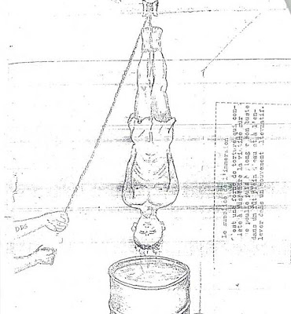

By now, we've become inured to the grotesque spectacle of Bush Regime appointees behaving as if the rules of reality can be suspended at the whim of the Grand and Glorious Decider. Thus it is with a dull sense of soul-weary duty, rather than with an acute sense of outrage freshly whetted against a novel form of evil, that we examine the casual ratification of the practice of “waterboarding” -- that is, controlled drowning – resulting from Senate confirmation hearings for Michael Mukasey.
Mr. Mukasey was advertised as a sober, independent jurist not beholden to the Bush Regime's dictatorial dogmas. Yet on the razor's-edge question of a defining claim of dictatorial power – that is, can the president authorize torture, in the specific form of “waterboarding”? -- Mukasey revealed himself to be a Bu'ushist in full.
Replying in writing to a Senate Judiciary Committee inquiry, Mukasey insisted that he personally finds waterboarding “repugnant” but not necessarily illegal.
“I said at the hearing that torture violates the law and the Constitution, and the president may not authorize it as he is no less bound by constitutional restrictions than any other government official,” wrote Mukasey. He also acknowledged that military personnel are expressly prohibited from subjecting a detainee to “waterboarding” under the Detainee Treatment Act and the Field Manual on Intelligence.
If you hear a Limbaugh-sized “but” in the offing, you're absolutely correct.
With respect to the use of that technique by civilian interrogators, such as CIA officials, Mukasey engaged in a prolonged exercise in omphaloskepsis, refusing to rule out the practice of waterboarding since it is not specifically described as “torture” in an existing statute. The same is true, of course, of myriad other sadistic exercises currently in use or yet to be invented by the perverse ingenuity of fallen man, any of which could be pressed into service by the Bu'ushists or their successors.

There is no ambiguity here as to whether waterboarding is torture. It was identified as such for the purpose of prosecuting as war criminals those Japanese military police who practiced it as an intelligence and counter-insurgency measure. African warlords found it useful in sowing terror and despair among their opponents. The Khmer Rouge, who didn't flinch from using every depraved and barbarous tool devised by their singularly resourceful imagination, found waterboarding to be their most effective torture protocol.
In a letter of their own (.pdf) to Senate Judiciary Committee Chairman Patrick Leahy, former Judge Advocates General for all four branches of the military wrote: “Waterboarding detainees amounts to illegal torture in all circumstances. To suggest otherwise -- or even to give credence to such a suggestion -- represents both an affront to the law and to the core values of our nation.” (Emphasis added.)
And yet, those loyal to the cult of the Dear Leader affect a puzzled agnosticism when asked if waterboarding is illegal torture, rather than a permissible form of “enhanced interrogation.”
Mukasey, faithfully following The Decider's example, took refuge in circular reasoning: Torture is illegal; the administration practices waterboarding; therefore, waterboarding can't be illegal, because the administration practices it.
Acting like an idiot – and a dishonest one, at that – for public consumption was a relatively trivial sacrifice for Mukasey. Daniel Levin, former acting assistant Attorney General, made a more substantial sacrifice in the service of The Decider's torture prerogative.


A diagram illustrating a waterboarding technique favored by African warlords during a conflict in Chad.
In 2004, Levin voluntarily underwent waterboarding at a US military facility in order to determine whether it constitutes torture. Even though he was in friendly hands that withheld the worst from him, and surrounded by medical personnel ready to administer help to him, Levin found the experience utterly terrifying.
And yet ... even then he couldn't bring himself to say that the practice “amounts to illegal torture in all circumstances,” as the JAG officers observed. Instead, he wrote that it could be regarded as illegal torture unless carried out in a highly limited way under appropriate supervision.
Levin's December 2004 memo on interrogation, which described torture as “abhorrent,” contained a footnote pointedly denying that the previous Bush Regime legal opinions on the subject were incorrect. Levin was instructed to revise his memo to highlight the substance of his footnote – namely, that torture was still legal, whether or not it was expressly forbidden by law. But Levin was forced out by other Regime officials who caught the scent of heresy and apostasy wafting from the first draft of his memo.
With the connivance of key Democrats – chiefly the execrable Charles Schumer – Mukasey appears headed for confirmation. Meanwhile, John Bellinger, the chief legal aide to Secretary of State Rice, has pointedly refused to describe waterboarding of US citizens as illegal – even when carried out by foreign intelligence agencies:
Philippe Sands [BBC reporter]: Let me put it in yet another way. Could you imagine any circumstances in which the use of water boarding on an American national by a foreign intelligence service could be justified?
John Bellinger: One would have to apply the facts to the law, the law to the facts, to determine whether any technique, whatever it happened to be, would cause severe physical pain or suffering.
Philippe Sands: So you're willing to exclude any American going to the international criminal court under any circumstances, but you're not able to exclude the possibility of water boarding being used on a United States national by foreign intelligence service? I mean, that just strikes me as very curious.
John Bellinger: Well, I'm not willing to include it or exclude it, I mean, these are issues that our justice department as a matter of interpreting both the domestic law on torture and international law, has concluded that just don't want to get involved in abstract discussions of applying the law to any set of facts.
How should the question of US citizens suffering torture at the hands of foreign interrogators be considered “an abstract discussion”? So zealous is the Bush Regime to protect its self-issued license to torture that it has now validated the arguments used by Japanese war criminals six decades ago to justify their own torture of American servicemen.

As the song says, “You're gonna reap just what you sow – that old sayin' is true ... Just like you mistreat someone, someone's gonna mistreat you.... Further on up the road.”
Video Extra
There was a time when conservatives denounced “situational ethics,” rather than pioneering new frontiers in the same. Even though it might be too much to ask conservatives to keep their categorical imperatives in line, couldn't they at least understand the elemental logic of payback?
There's wisdom in the lyrics of the blues standard performed below by the immortal Eric Clapton and Jeff Beck. The performance is (appropriately enough) from a 1981 London concert called “The Secret Policeman's Other Ball,” a fundraiser for Amnesty International's commendable efforts to combat torture.
Mssrs. Clapton and Beck swap 24-bar leads. Clapton's are elegant. Beck's are incendiary
Dum spiro, pugno!
10 comments:
William,
You're gonna reap just what you sow. That saying is definitely true. After all, it is from The Word.
How can we expect people to love us when we throw our weight around to the extent that we do? This concept is lost on megachurch Christians, which is one reason I am no longer part of that scene.
Epic git-tar by Clapton and Beck.
John Bellinger: "Well, I'm not willing to include it or exclude it, I mean, these are issues that our justice department as a matter of interpreting both the domestic law on torture and international law, has concluded that just don't want to get involved in abstract discussions of applying the law to any set of facts."
How should the question of US citizens suffering torture at the hands of foreign interrogators be considered “an abstract discussion”?
I see his response in a different light, perhaps. I actually do look at torture, as well as any other matter, in the abstract as one, who is not a moral relativist that is, should be able to quite easily.
Ergo, Bellinger's inability or refusal to see torture as a black and white issue is indicative of his moral relativism and, by extension, the Regime's view in toto on torture as well as many other issues we're supposedly "wrestling" with today.
And, from merely observing the cultural landscape, this moral relativism is unfortunately the unequivocal view of the populace at large as well. Maybe the concept and true meaning of "torture" hasn't reached the level of confusion and meaninglessness of, say, theft, yet, to the populace at large, but I'm sure it's gettin' there soon enough.
Already the concept and consequently the meaning of "theft" has been so diluted and obfuscated that most folk today can't discern theft properly in the abstract, only the "in your face" street variety. Sure they may say "stealing is evil!" in general conversation, but if you looked in their pocket at the "Property of the U.S. Government" pens and other miscellaneous artifacts in their possession as well as those who get a government check for whatever reason, their definition of theft is clearly skewed, vague, and thus relative.
And such is often the case with other issues as well, unfortunately.
IOW, hypocrisy and/or relativism is rampant everywhere and is demonstrated by many on every side involving almost every major issue.
Many folk inside and outside government speak with a forked tongue. They often say one thing, yet do the exact opposite. Again, generally the folk in government reflect the folk outside of government, who elected the former into the political position to be their representative in the first place.
Sigh, merely A sign of the times in which we live and I only can see it getting worse, not better, until the King of Kings arrives.
If folk, even Lincoln perhaps, could've read the tea leaves as far back as 1865 and foresaw what the war's aftermath would spawn, especially in terms of federal government aggregate growth, there might of been a concerted effort to reverse course and take us down a different path. At the very least, many would've made an earnest attempt at slowing down the growth and influence of the Washington D.C. juggernaut into the Leviathan it has become today.
But one of the default casualties of the War between the States was the people's belief that the central government played a minor role in domestic issues. After all, most of the contemporaries of that era called it the "Civil War" themselves. The Feds had, through this war, demonstrated to ALL of the states, not just those of the South, who was really calling the shots in domestic affairs.
Yes, there are many references to sowing and reaping in the Word, but one of my favorites is Hosea 8:7: "They sow the wind and reap the whirlwind."
We're certainly reapin' the whirlwind, baby. Enjoy!...sigh.
Bellinger is a lawyer. He's into the "that depends on what the meaning of "is" is" type of reasoning.
Upon his return from law school, Senator Jim Webb's Appalachian auntie asked him: "Have they learned you how to lie yet?"
I guess one man's lie is merely another man's obfuscation.
Stop calling it "waterboarding."
My god.. that sounds like something you do on the weekend at the beach! Giving this form of torture such an innocuous name serves to diminish its sinister nature. I'll betcha Dick Cheney and Alberto Gonzales love that name.
Call it what it is. Water torture. Simulated drowning. Hearing the term "waterboarding" makes me want to visit the local surf shop.
Speak truth to power, my brother. The monster is in it's death throes. Keep pushing.
i no longer recognize this country, its politicians, and many of its people.
to think that this country is actually DEBATING not only what torture is but also WHEN its "appropriate" to use it, is incomprehensible.
so many of the aforementioned unrecognizable people in this country are hateful, mean-spirited, and filled with an ethnocentric superiority complex ("our country is best; we know best; we can do whatever we want; don't do what we do, do what we say;" etc etc etc)
it won't take long when we'll echo the immortal words of a that great man, El-Hajj Malik El-Shabazz: "The chickens have come home to roost."
Most journalists like William Norman Grigg wet their pance at even the thought of attacking Israel and Zionism. This article is a perfect example of the false opposition front which many, otherwise good, journalists fearfully subscribe to. Go to www.bollyn.com to read the real reason why Mukasey should not be AG. He is a rabid Israel Firster Zionist with a long documented history to prove it.
That last panel cartoon has my black little heart flirting with despair...
In the Richard Adams story "The Plague Dogs" one of the unfortunate canines, Rowf, had been repeatedly subjected to senseless near death drowning experiences by curious (sadistic) government "researchers". Unlike humans undergoing waterboarding and other forms of torture, however, Rowf and the other animals at the research center lacked the option to reveal (mis)information that would end their pain and suffering.
Brilliant. Stunning, clear, depressing, and brilliant.
Post a Comment